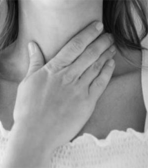

Description
L’unité Logopédie de la Voix est incluse dans le département 1 (Département de psychologie : Cognition et Comportement) de la Faculté de Psychologie et des Sciences de l’Education de l’Université de Liège.
Elle est une des finalités de la section logopédie. En effet, la section logopédie de l'Ulg comprend 4 finalités à savoir
- Finalité spécialisée en neuropsychologie du langage et troubles des apprentissages verbaux www.npla.ulg.ac.be
- Finalité spécialisée en langage oral et handicap www.logoclinique.ulg.ac.be
- Finalité spécialisée en surdité [pas encore de site]
- Finalité spécialisée en voix
3 Objectifs
Former
Former de futur(e)s logopèdes aux rééducations des troubles de la voix parlée et chantée
Développer
Développer un secteur de recherche spécifique au domaine de la voix dont les intérêts sont pour l’instant : l’évaluation vocale, la charge vocale, la justesse vocale
Offir
Offrir la possibilité d’une prise en charge logopédique en voix et en orthodontie au sein de la Clinique Psychologique et Logopédie de la Faculté